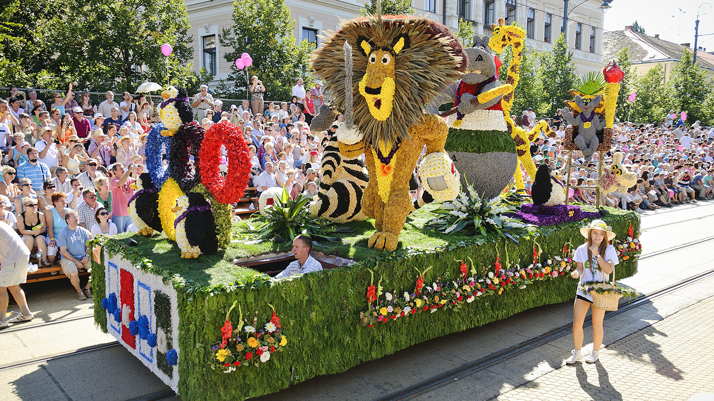

Az én nyaram
Én a nyárból másfél hónapot a munkával töltöttem, de szerencsére a szabadidőm nagyrészében a barátnőmmel tudtam lenni
A szabadidőmnek azt a részét amikor nem vele voltam akkor eline
League of Legends
nevű játékkal játszottam
Későbbiekben
Diablo 3
nevű játékkal
Az augusztos 20.ai felvonulást most nétem meg elsőnek élőben, de most is egy különös módon tel, mert a barátnőm fellépő volt a karneválon, és én végig isértem mert nem lehetett nálluk semmilyen cucc
